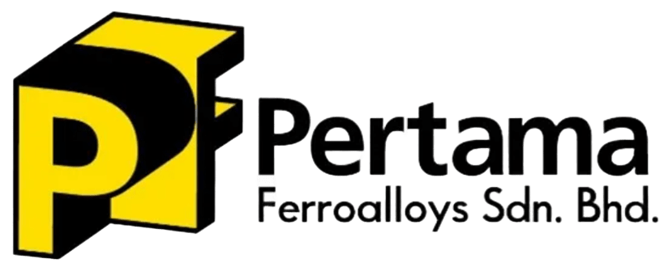
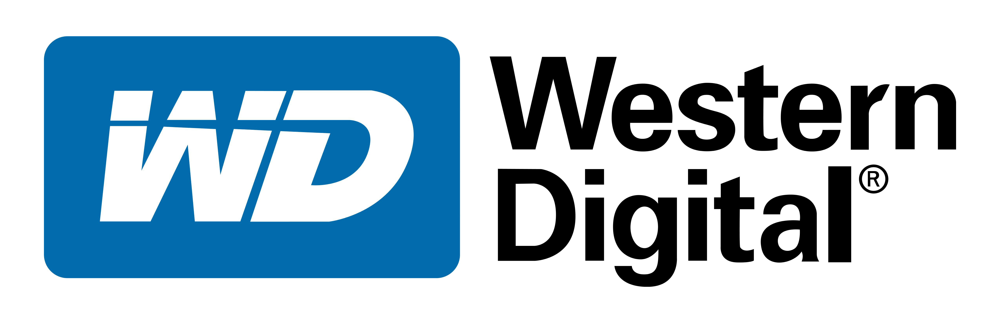
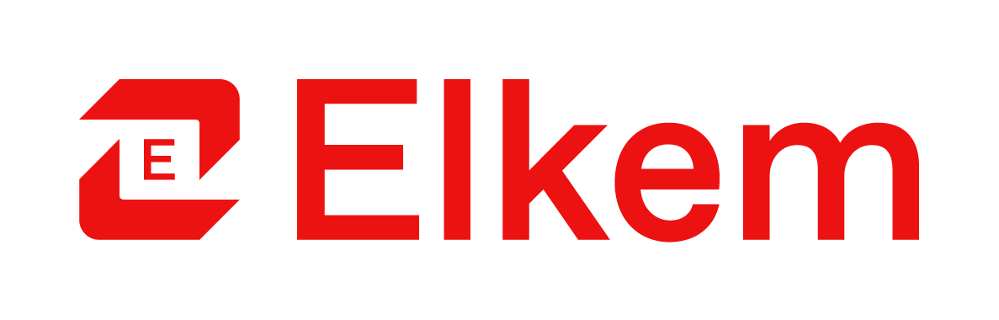
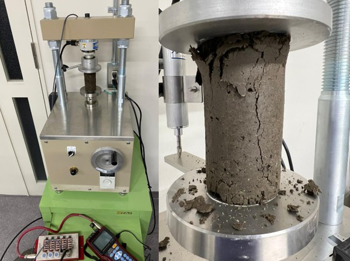
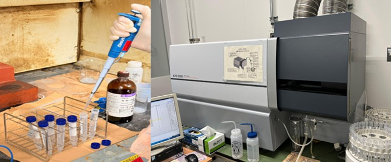

▦
Compliance & Assurance Evidence
Maintain controlled records, monitoring evidence, regulatory documentation, and technical reports that support audit readiness and compliance closure.
I support engineering teams through data analyzation, process stabilization, regulatory compliance, data-driven root-cause analysis, and controlled documentation.
My experience connects plant operations, manufacturing quality, environmental compliance, laboratory testing, and research-based performance evaluation. I have worked on Department of Environment compliance, CEMS/groundwater/wastewater monitoring, process stabilization, KPIV monitoring, failure-analysis data review, SOP/checklist improvement, and QMS documentation.
For system assurance and requirements roles, I bring transferable strengths in traceable evidence, controlled procedures, non-conformance prevention, cross-functional coordination, and analytical reporting.
A portfolio structure designed for recruiters reviewing engineering assurance, quality, compliance, and requirements-management potential.
Maintain controlled records, monitoring evidence, regulatory documentation, and technical reports that support audit readiness and compliance closure.
Use KPIV trends, process data, failure-analysis information, and corrective/preventive action tracking to stabilize process performance.
Develop and revise SOPs, checklists, workflows, and team briefings to ensure consistent implementation across operations.
Support ASTM/GB standard testing, QMS processes, lab documentation, physical/proximate analysis, data review, and report generation.
Improve operational workflows, preventive maintenance coordination, warehouse planning, process productivity, and issue-prevention systems.
Coordinate R&D and technical validation for silicomanganese slag, microsilica, soil stabilization, concrete, and performance evaluation.
Relevant industry work history reframed for process assurance, compliance control, quality improvement, and engineering documentation.



Replace each card with screenshots, anonymized charts, SOP samples, report pages, or project photos when available.
Managed compliance-related monitoring for waste/by-product handling, CEMS, groundwater, and wastewater quality in a ferroalloy plant environment.
Used process trends and failure-analysis data to investigate defects, prioritize corrective actions, and verify effectiveness after implementation.
Developed and revised SOPs and checklists with embedded EHS risk assessment, followed by team briefings to secure implementation.
Set up testing documentation workflows and performed ASTM/GB physical and proximate analysis with traceable reporting.
 Research
Research
Investigated silicomanganese slag as a stabilization material for peat soil, connecting mix design, curing behavior, strength performance, microstructural development, and environmental suitability.

MechanicalEvaluated the strength development of peat–SiMn slag–cement composites using unconfined compressive strength testing and subgrade performance benchmarking.
 Characterization
Characterization
Investigated microstructural and mineralogical evolution using XRD, SEM, and SEM-EDS to identify hydration products and reaction evidence.

EnvironmentalAssessed the environmental suitability of SiMn slag-stabilized peat through leachability testing and elemental concentration analysis using ICP-OES.
Improved internal warehouse processes, policies, and procedures to increase operational efficiency and consistency.
A targeted section for Sarawak Metro-type roles. It explains how existing experience transfers into system assurance work.
Transferable from QMS documentation, SOP controls, standard testing, regulatory monitoring, and technical reporting. Next step: formalize this into requirements traceability matrices and verification evidence logs.
Transferable from SOP revisions, checklist updates, process standardization, and warehouse/operations workflow controls. Next step: connect changes to baseline documents, approval routes, and implementation evidence.
Transferable from coordination with government agencies, universities, and industry partners, including compliance-driven technical discussions and follow-up actions.
Directly supported by KPIV monitoring, trend-chart analysis, failure-analysis review, CAPA implementation, and defect-prevention work in manufacturing.
Note: For a public website, avoid uploading confidential plant data, internal SOPs, customer data, full addresses, or proprietary reports. Use anonymized case studies and representative visuals.
Available for roles in Kuching/Sarawak and engineering environments that value structured documentation, analytical thinking, process stability, and compliance discipline.